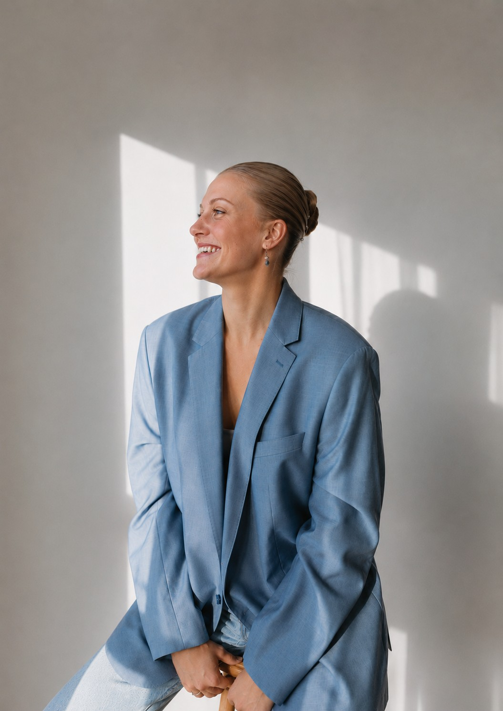

Webbutveckling
Jönköpings Universitet, Värnamo Campus
Värnamo, Sverige
- | Pågående

Webbutveckling - Student
Och välkommen till mitt personliga CV och portfolio. Här kan du läsa mer om mig, min utbildning och tidigare erfarenheter och de projekt jag arbetar med under min utbildning inom webbutveckling.
Jag är en driven och nyfiken webbutvecklingsstudent som brinner för att skapa användarvänliga, moderna och visuellt tilltalande webblösningar.
Mitt fokus ligger på att utvecklas inom både frontend och backend, och jag har ett stort intresse för att kombinera kreativitet med teknik.
Se min portfolio!Jönköpings Universitet, Värnamo Campus
Värnamo, Sverige
- | Pågående
Tenhults Naturbruksgymnasium
Tenhult, Sverige
-
-
Efter studenten hoppade jag direkt in i djursjukvårds- världen. Där jag bland annat fick arbeta på många av klinikens avdelningar, så som pol, operation, ultraljud, rehab, reception och butik.
Där fick jag god användning av mina egenskaper såsom strukturerad, engarerad, analytisk, positiv och trevlig.
Jag har även fått utveckla min samarbetsförmåga, kundservice och effektivitet. Jag har fått arbeta tätt med mina kollergor för att skapa en väl fungerande arbetsrytm och inte allra minst ett bra team!
Tidigare nrämsta chef: Sara Lundberg
Kontaktuppgifter ges på förfrågan.
Under min utbildning utvecklar jag mina kunskaper inom både programmering, design och användarupplevelse.
Portfolio
Här samlar jag projekt och övningar från min utbildning. Portfolion kommer att utvecklas och fyllas på i takt med att jag lär mig fler tekniker inom webbutveckling.
Till min portfolio